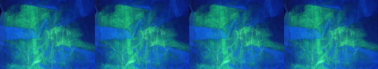
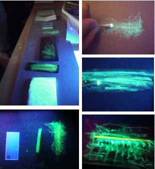
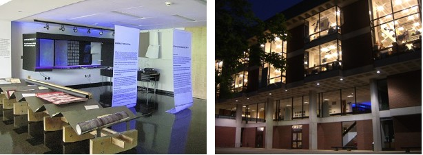
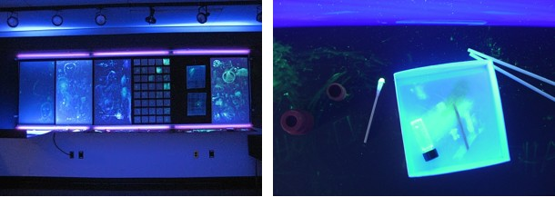
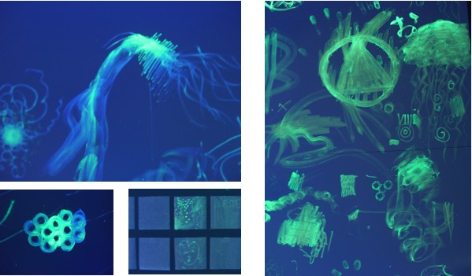
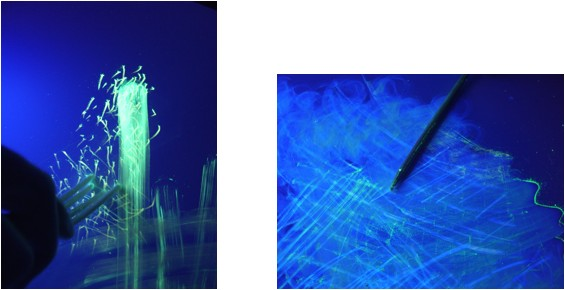
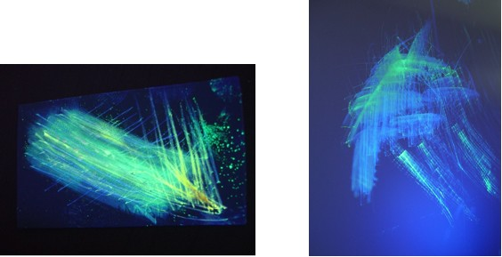

INTRODUCTION
Scratch the Surface InkTM was featured in an interactive black light activated graffiti board display as part of the Chromogenic Materials Agents of Architecture Exhibit in the UVA Architecture School April 26-May 2, 2010. BF2AVB ink was provided, along with cotton swabs, rubber septa, burin, and other tools to draw and scratch on different material substrates, including chipboard, black and white foam core, Vyco (vinyl), weighing paper, laser etched plexiglas, and Yupo (polypropylene). This project emerged from engaging discussions and collaborative explorations conducted by Rosana Rubio-Hernandez and Cassandra Fraser. Shehzeen Cassum, Yamen Hama, Lin Jia and others played key roles in helping to design and curate the exhibit and with videography too. Lisa Russ Spaar contributed poetic reflections. Selected images, and links to text, video and additional information may be found below.
SELECTED IMAGES
Preliminary Experiments

Campbell Hall Exhibit

Black Light Box

Graffiti

Yupo & Vyco

Rough Sketches

TEXT
- Poetic Reflections, Yupo Sketches, Lisa Russ Spaar
- Scratch the Surface Ink > About BF2AVB, Cassandra Fraser
- Embrace the Fugitive, Cassandra Fraser
- Exhibit Poster, Rosana Rubio-Hernandez
VIDEO
- Chromogenic Materials Agents of Architecture Exhibit
- Weighing Paper + Burin
- Weighing Paper + Cotton Swab
- Painting on Yupo 1
- Painting on Yupo 2
- Scratching on Yupo
Additional documentation of the exhibit may be found on Rosana Rubio-Hernandez' blog, Through Glass Paradoxes.
PRESS
An image and composition from the exhibit was featured on the cover of a special mechanoresponsive material issue of the Journal of Materials Chemistry.

An Optics and Photonics News article "Exploring Mechanochromatic Dyes" about these mechanochromic luminescent materials also featured an image and composition from the exhibit.
CONTRIBUTORS
Architecture
- Rosana Rubio-Hernandez, Lecturer, Curator
- Lin Jia, Graduate Student, Adjunct Curator, Videographer
- Dick Smith, Installation Maintenance
- Shehzeen Cassum, Undergraduate, Design
- Yamen Hama, Undergraduate, Design
Arts & Sciences
- Cassandra Fraser, Professor, UVA Chemistry, Materials, Concepts, Text
- Guoqing Zhang, Graduate Student, UVA Chemistry, Materials, Concepts
- Lisa Russ Spaar, Professor, UVA English and Creative Writing, Poetic Reflections
ACKNOWLEDGEMENTS
We thank the Architecture School, the Page Barbour Program in the College of Arts and Sciences (Plastic Project), and the National Science Foundation for support for our experiments and exhibit.
- Contact
- University of Virginia
- Chemistry
- Last modified:
- Copyright ©